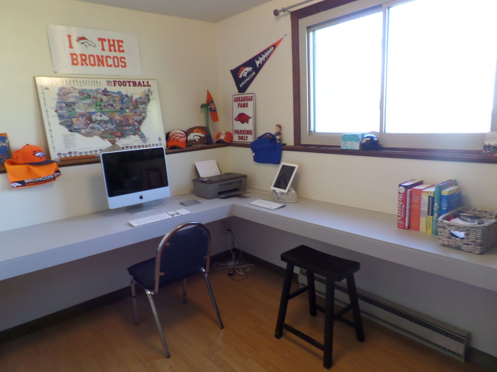

Floating Desk
May 1, 2020
For weeks, I scoured the internet looking for the perfect desk. Every one I found was way over our budget, so I started looking for DIY options. Unfortunately, even the DIY options I found were over $100, which was still over our budget. I eventually found this post on HGTV, but it was much smaller than what we needed, and had storage space we didn’t need. We managed to make a desk with 24 sq ft of desk top that cost around $50 in lumber and took 3-4 hours of work time.
Step 1: Make a plan
We spent a few minutes planning the size we wanted our desk to be. We had the full room to work with, so we decided to use one full wall and most of another, making an “L” shaped desk. We the shorter side of the “L” deeper than the longer side, as it would be more stable being supported by 2 walls. This floating desk could be modified to fit any space, and would be pretty stable even if you don’t have a corner to work with. You could potentially have the lumber store cut all of your wood once you have your plan, but we had them cut the MDF only.
Step 2: Gather supplies
- 2x4s: 6 that were 8’ long (about $15)
- MDF: One 4’x8’ sheet, ½” thick (about $30)
- 1x4s: 2 that were 8’ long (about $5)
- Indoor satin latex paint, any color
- Medium and small size paint brushes
- Spackling compound
- Painter’s caulk
- Painter’s tape
- 100 grit sand paper
- Drill
- Screws
- Finishing nails
Step 3: Find the studs
It’s important to hit the studs while making your frame, so take the time now to use a stud finder and mark them on the wall with a pencil.
Step 4: Make your frame
Now make the frame for your desk, starting with the wall side. Use screws to screw your 2X6s into the studs you found in step 2. Then attach the outside boards to the 2x6s you already attached to the wall by drilling your screws in at an angle. Next, add smaller pieces in between front and back for added stability. These should be added everywhere there is a stud, and will again be screwed in at an angle.
Step 5: Make the frame “pretty”
You can skip this step if you’d like, since this is for appearance only. Since 2X4s have a rounded edge, we used nails to fix a 1×4, which is has a square edge, to the front of the frame only.
Step 6: Put your MDF on top, fill in cracks and wholes, sand, and paint
Since we had our MDF cut for us at the lumber store, all we had to do was lay the MDF on top and nail it down using finishing nails. Note: Not all walls are square, you may have to make adjustments accordingly. First place painters tape on the wall, about ¼” above the top of the desk. Use painter’s caulk between the top of the desk and the wall. You can paint over this, and it will give you a nice finished edge. Use spackling compound to fill in cracks and holes. You will want to let this dry for 3-4 hours before proceeding to the next step. Use fine grit sand paper to sand down the filler and make everything smooth. Clean and dry the desk so it will be ready for painting. You are now ready to paint your desk any color you desire, I used an indoor latex paint in light gray because I already had it lying around. I waited about 4 hours after painting and applied a second coat.